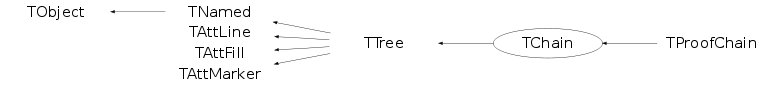
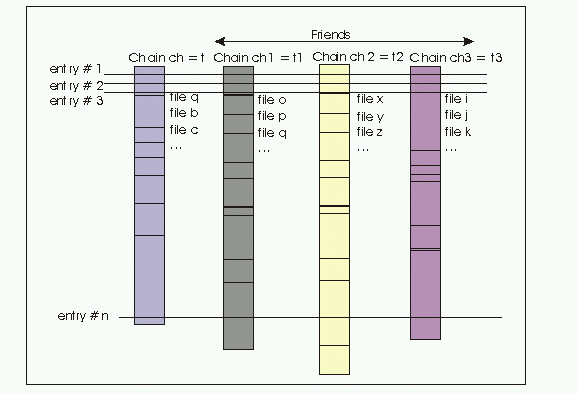

class TChain: public TTree
TChain A chain is a collection of files containg TTree objects. When the chain is created, the first parameter is the default name for the Tree to be processed later on. Enter a new element in the chain via the TChain::Add function. Once a chain is defined, one can use the normal TTree functions to Draw,Scan,etc. Use TChain::SetBranchStatus to activate one or more branches for all the trees in the chain.
Function Members (Methods)
public:
| TChain() | |
| TChain(const char* name, const char* title = "") | |
| virtual | ~TChain() |
| void | TObject::AbstractMethod(const char* method) const |
| virtual Int_t | Add(TChain* chain) |
| virtual Int_t | Add(const char* name, Long64_t nentries = kBigNumber) |
| virtual void | TTree::AddBranchToCache(const char* bname, Bool_t subbranches = kFALSE) |
| virtual void | TTree::AddBranchToCache(TBranch* branch, Bool_t subbranches = kFALSE) |
| virtual Int_t | AddFile(const char* name, Long64_t nentries = kBigNumber, const char* tname = "") |
| virtual Int_t | AddFileInfoList(TCollection* list, Long64_t nfiles = kBigNumber) |
| virtual TFriendElement* | AddFriend(const char* chainname, const char* dummy = "") |
| virtual TFriendElement* | AddFriend(const char* chainname, TFile* dummy) |
| virtual TFriendElement* | AddFriend(TTree* chain, const char* alias = "", Bool_t warn = kFALSE) |
| virtual void | TTree::AddTotBytes(Int_t tot) |
| virtual void | TTree::AddZipBytes(Int_t zip) |
| virtual void | TObject::AppendPad(Option_t* option = "") |
| virtual Long64_t | TTree::AutoSave(Option_t* option = "") |
| virtual Int_t | TTree::Branch(TList* list, Int_t bufsize = 32000, Int_t splitlevel = 99) |
| virtual Int_t | TTree::Branch(const char* folder, Int_t bufsize = 32000, Int_t splitlevel = 99) |
| virtual Int_t | TTree::Branch(TCollection* list, Int_t bufsize = 32000, Int_t splitlevel = 99, const char* name = "") |
| virtual TBranch* | TTree::Branch(const char* name, void* address, const char* leaflist, Int_t bufsize = 32000) |
| TBranch* | TTree::Branch(const char* name, char* address, const char* leaflist, Int_t bufsize = 32000) |
| TBranch* | TTree::Branch(const char* name, long address, const char* leaflist, Int_t bufsize = 32000) |
| TBranch* | TTree::Branch(const char* name, int address, const char* leaflist, Int_t bufsize = 32000) |
| TBranch* | TTree::Branch(const char* name, void** obj, Int_t bufsize = 32000, Int_t splitlevel = 99) |
| TBranch* | TTree::Branch(const char* name, const char* classname, void** obj, Int_t bufsize = 32000, Int_t splitlevel = 99) |
| virtual TBranch* | TTree::BranchOld(const char* name, const char* classname, void* addobj, Int_t bufsize = 32000, Int_t splitlevel = 1) |
| virtual TBranch* | TTree::BranchRef() |
| virtual TBranch* | TTree::Bronch(const char* name, const char* classname, void* addobj, Int_t bufsize = 32000, Int_t splitlevel = 99) |
| virtual void | Browse(TBrowser*) |
| virtual Int_t | TTree::BuildIndex(const char* majorname, const char* minorname = "0") |
| TStreamerInfo* | TTree::BuildStreamerInfo(TClass* cl, void* pointer = 0, Bool_t canOptimize = kTRUE) |
| virtual void | CanDeleteRefs(Bool_t flag = kTRUE) |
| virtual TFile* | TTree::ChangeFile(TFile* file) |
| static TClass* | Class() |
| virtual const char* | TObject::ClassName() const |
| virtual void | TNamed::Clear(Option_t* option = "") |
| virtual TObject* | TNamed::Clone(const char* newname = "") const |
| virtual TTree* | TTree::CloneTree(Long64_t nentries = -1, Option_t* option = "") |
| virtual Int_t | TNamed::Compare(const TObject* obj) const |
| virtual void | TNamed::Copy(TObject& named) const |
| virtual void | TTree::CopyAddresses(TTree*, Bool_t undo = kFALSE) |
| virtual Long64_t | TTree::CopyEntries(TTree* tree, Long64_t nentries = -1, Option_t* option = "") |
| virtual TTree* | TTree::CopyTree(const char* selection, Option_t* option = "", Long64_t nentries = 1000000000, Long64_t firstentry = 0) |
| virtual TBasket* | TTree::CreateBasket(TBranch*) |
| virtual void | CreatePackets() |
| Int_t | TTree::Debug() const |
| virtual void | TTree::Delete(Option_t* option = "")MENU |
| virtual void | DirectoryAutoAdd(TDirectory*) |
| Int_t | TAttLine::DistancetoLine(Int_t px, Int_t py, Double_t xp1, Double_t yp1, Double_t xp2, Double_t yp2) |
| virtual Int_t | TObject::DistancetoPrimitive(Int_t px, Int_t py) |
| virtual void | Draw(Option_t* opt) |
| virtual Long64_t | Draw(const char* varexp, const TCut& selection, Option_t* option = "", Long64_t nentries = kBigNumber, Long64_t firstentry = 0) |
| virtual Long64_t | Draw(const char* varexp, const char* selection, Option_t* option = "", Long64_t nentries = kBigNumber, Long64_t firstentry = 0)MENU |
| virtual void | TObject::DrawClass() constMENU |
| virtual TObject* | TObject::DrawClone(Option_t* option = "") constMENU |
| virtual void | TTree::DropBaskets() |
| virtual void | TTree::DropBranchFromCache(const char* bname, Bool_t subbranches = kFALSE) |
| virtual void | TTree::DropBranchFromCache(TBranch* branch, Bool_t subbranches = kFALSE) |
| virtual void | TTree::DropBuffers(Int_t nbytes) |
| virtual void | TObject::Dump() constMENU |
| virtual void | TObject::Error(const char* method, const char* msgfmt) const |
| virtual void | TObject::Execute(const char* method, const char* params, Int_t* error = 0) |
| virtual void | TObject::Execute(TMethod* method, TObjArray* params, Int_t* error = 0) |
| virtual void | TObject::ExecuteEvent(Int_t event, Int_t px, Int_t py) |
| virtual void | TObject::Fatal(const char* method, const char* msgfmt) const |
| virtual Int_t | Fill() |
| virtual void | TNamed::FillBuffer(char*& buffer) |
| virtual TBranch* | FindBranch(const char* name) |
| virtual TLeaf* | FindLeaf(const char* name) |
| virtual TObject* | TObject::FindObject(const char* name) const |
| virtual TObject* | TObject::FindObject(const TObject* obj) const |
| virtual Int_t | TTree::Fit(const char* funcname, const char* varexp, const char* selection = "", Option_t* option = "", Option_t* goption = "", Long64_t nentries = 1000000000, Long64_t firstentry = 0)MENU |
| virtual Int_t | TTree::FlushBaskets() const |
| virtual const char* | GetAlias(const char* aliasName) const |
| virtual Long64_t | TTree::GetAutoFlush() const |
| virtual Long64_t | TTree::GetAutoSave() const |
| virtual TBranch* | GetBranch(const char* name) |
| virtual TBranchRef* | TTree::GetBranchRef() const |
| virtual Bool_t | GetBranchStatus(const char* branchname) const |
| static Int_t | TTree::GetBranchStyle() |
| virtual Long64_t | TTree::GetCacheSize() const |
| virtual Long64_t | GetChainEntryNumber(Long64_t entry) const |
| virtual Long64_t | TTree::GetChainOffset() const |
| virtual TTree::TClusterIterator | GetClusterIterator(Long64_t firstentry) |
| TFile* | TTree::GetCurrentFile() const |
| Long64_t | TTree::GetDebugMax() const |
| Long64_t | TTree::GetDebugMin() const |
| Int_t | TTree::GetDefaultEntryOffsetLen() const |
| TDirectory* | TTree::GetDirectory() const |
| virtual Option_t* | TObject::GetDrawOption() const |
| static Long_t | TObject::GetDtorOnly() |
| virtual Long64_t | GetEntries() const |
| virtual Long64_t | GetEntries(const char* sel) |
| virtual Long64_t | TTree::GetEntriesFast() const |
| virtual Long64_t | TTree::GetEntriesFriend() const |
| virtual Int_t | GetEntry(Long64_t entry = 0, Int_t getall = 0) |
| virtual TEntryList* | TTree::GetEntryList() |
| virtual Long64_t | GetEntryNumber(Long64_t entry) const |
| virtual Long64_t | TTree::GetEntryNumberWithBestIndex(Int_t major, Int_t minor = 0) const |
| virtual Long64_t | TTree::GetEntryNumberWithIndex(Int_t major, Int_t minor = 0) const |
| virtual Int_t | GetEntryWithIndex(Int_t major, Int_t minor = 0) |
| virtual Long64_t | TTree::GetEstimate() const |
| Int_t | TTree::GetEvent(Long64_t entry = 0, Int_t getall = 0) |
| TEventList* | TTree::GetEventList() const |
| TFile* | GetFile() const |
| virtual Int_t | TTree::GetFileNumber() const |
| virtual Color_t | TAttFill::GetFillColor() const |
| virtual Style_t | TAttFill::GetFillStyle() const |
| virtual TTree* | TTree::GetFriend(const char*) const |
| virtual const char* | TTree::GetFriendAlias(TTree*) const |
| TH1* | TTree::GetHistogram() |
| virtual const char* | TObject::GetIconName() const |
| virtual Int_t* | TTree::GetIndex() |
| virtual Double_t* | TTree::GetIndexValues() |
| virtual TIterator* | TTree::GetIteratorOnAllLeaves(Bool_t dir = kIterForward) |
| virtual TLeaf* | GetLeaf(const char* name) |
| virtual TLeaf* | GetLeaf(const char* branchname, const char* leafname) |
| virtual Color_t | TAttLine::GetLineColor() const |
| virtual Style_t | TAttLine::GetLineStyle() const |
| virtual Width_t | TAttLine::GetLineWidth() const |
| virtual TList* | TTree::GetListOfAliases() const |
| virtual TObjArray* | GetListOfBranches() |
| virtual TList* | TTree::GetListOfClones() |
| TObjArray* | GetListOfFiles() const |
| virtual TList* | TTree::GetListOfFriends() const |
| virtual TObjArray* | GetListOfLeaves() |
| Int_t | TTree::GetMakeClass() const |
| virtual Color_t | TAttMarker::GetMarkerColor() const |
| virtual Size_t | TAttMarker::GetMarkerSize() const |
| virtual Style_t | TAttMarker::GetMarkerStyle() const |
| virtual Long64_t | TTree::GetMaxEntryLoop() const |
| virtual Double_t | GetMaximum(const char* columname) |
| static Long64_t | TTree::GetMaxTreeSize() |
| virtual Long64_t | TTree::GetMaxVirtualSize() const |
| virtual Double_t | GetMinimum(const char* columname) |
| virtual const char* | TNamed::GetName() const |
| virtual Int_t | GetNbranches() |
| TObject* | TTree::GetNotify() const |
| Int_t | GetNtrees() const |
| virtual char* | TObject::GetObjectInfo(Int_t px, Int_t py) const |
| static Bool_t | TObject::GetObjectStat() |
| virtual Option_t* | TObject::GetOption() const |
| virtual Int_t | TTree::GetPacketSize() const |
| TVirtualTreePlayer* | TTree::GetPlayer() |
| virtual Long64_t | GetReadEntry() const |
| virtual Long64_t | TTree::GetReadEvent() const |
| virtual Int_t | TTree::GetScanField() const |
| TTreeFormula* | TTree::GetSelect() |
| virtual Long64_t | TTree::GetSelectedRows() |
| TList* | GetStatus() const |
| virtual Int_t | TTree::GetTimerInterval() const |
| virtual const char* | TNamed::GetTitle() const |
| virtual Long64_t | TTree::GetTotBytes() const |
| TBuffer* | TTree::GetTransientBuffer(Int_t size) |
| virtual TTree* | GetTree() const |
| virtual TVirtualIndex* | TTree::GetTreeIndex() const |
| virtual Int_t | GetTreeNumber() const |
| Long64_t* | GetTreeOffset() const |
| Int_t | GetTreeOffsetLen() const |
| virtual UInt_t | TObject::GetUniqueID() const |
| virtual Int_t | TTree::GetUpdate() const |
| virtual TList* | TTree::GetUserInfo() |
| virtual Double_t* | TTree::GetV1() |
| virtual Double_t* | TTree::GetV2() |
| virtual Double_t* | TTree::GetV3() |
| virtual Double_t* | TTree::GetV4() |
| virtual Double_t* | TTree::GetVal(Int_t i) |
| TTreeFormula* | TTree::GetVar(Int_t i) |
| TTreeFormula* | TTree::GetVar1() |
| TTreeFormula* | TTree::GetVar2() |
| TTreeFormula* | TTree::GetVar3() |
| TTreeFormula* | TTree::GetVar4() |
| virtual Double_t* | TTree::GetW() |
| virtual Double_t | GetWeight() const |
| virtual Long64_t | TTree::GetZipBytes() const |
| virtual Bool_t | TObject::HandleTimer(TTimer* timer) |
| virtual ULong_t | TNamed::Hash() const |
| virtual void | TTree::IncrementTotalBuffers(Int_t nbytes) |
| virtual void | TObject::Info(const char* method, const char* msgfmt) const |
| virtual Bool_t | TObject::InheritsFrom(const char* classname) const |
| virtual Bool_t | TObject::InheritsFrom(const TClass* cl) const |
| virtual void | TObject::Inspect() constMENU |
| void | TObject::InvertBit(UInt_t f) |
| virtual TClass* | IsA() const |
| virtual Bool_t | TObject::IsEqual(const TObject* obj) const |
| virtual Bool_t | TTree::IsFolder() const |
| Bool_t | TObject::IsOnHeap() const |
| virtual Bool_t | TNamed::IsSortable() const |
| virtual Bool_t | TAttFill::IsTransparent() const |
| Bool_t | TObject::IsZombie() const |
| virtual Int_t | LoadBaskets(Long64_t maxmemory) |
| virtual Long64_t | LoadTree(Long64_t entry) |
| virtual Long64_t | TTree::LoadTreeFriend(Long64_t entry, TTree* T) |
| void | Lookup(Bool_t force = kFALSE) |
| virtual void | Loop(Option_t* option = "", Long64_t nentries = kBigNumber, Long64_t firstentry = 0)MENU |
| virtual void | ls(Option_t* option = "") const |
| virtual Int_t | TTree::MakeClass(const char* classname = 0, Option_t* option = "") |
| virtual Int_t | TTree::MakeCode(const char* filename = 0) |
| virtual Int_t | TTree::MakeProxy(const char* classname, const char* macrofilename = 0, const char* cutfilename = 0, const char* option = 0, Int_t maxUnrolling = 3) |
| virtual Int_t | TTree::MakeSelector(const char* selector = 0) |
| void | TObject::MayNotUse(const char* method) const |
| Bool_t | TTree::MemoryFull(Int_t nbytes) |
| virtual Long64_t | Merge(const char* name, Option_t* option = "") |
| virtual Long64_t | Merge(TCollection* list, Option_t* option = "") |
| virtual Long64_t | Merge(TCollection* list, TFileMergeInfo* info) |
| virtual Long64_t | Merge(TFile* file, Int_t basketsize, Option_t* option = "") |
| static TTree* | TTree::MergeTrees(TList* list, Option_t* option = "") |
| virtual void | TAttLine::Modify() |
| virtual Bool_t | TTree::Notify() |
| void | TObject::Obsolete(const char* method, const char* asOfVers, const char* removedFromVers) const |
| static void | TObject::operator delete(void* ptr) |
| static void | TObject::operator delete(void* ptr, void* vp) |
| static void | TObject::operator delete[](void* ptr) |
| static void | TObject::operator delete[](void* ptr, void* vp) |
| void* | TObject::operator new(size_t sz) |
| void* | TObject::operator new(size_t sz, void* vp) |
| void* | TObject::operator new[](size_t sz) |
| void* | TObject::operator new[](size_t sz, void* vp) |
| virtual void | TTree::OptimizeBaskets(ULong64_t maxMemory = 10000000, Float_t minComp = 1.1, Option_t* option = "") |
| virtual void | TObject::Paint(Option_t* option = "") |
| virtual void | TObject::Pop() |
| TPrincipal* | TTree::Principal(const char* varexp = "", const char* selection = "", Option_t* option = "np", Long64_t nentries = 1000000000, Long64_t firstentry = 0) |
| virtual void | Print(Option_t* option = "") const |
| virtual void | TTree::PrintCacheStats(Option_t* option = "") const |
| virtual Long64_t | Process(const char* filename, Option_t* option = "", Long64_t nentries = kBigNumber, Long64_t firstentry = 0)MENU |
| virtual Long64_t | Process(void* selector, Option_t* option = "", Long64_t nentries = kBigNumber, Long64_t firstentry = 0)MENU |
| virtual Long64_t | TTree::Project(const char* hname, const char* varexp, const char* selection = "", Option_t* option = "", Long64_t nentries = 1000000000, Long64_t firstentry = 0) |
| virtual TSQLResult* | TTree::Query(const char* varexp = "", const char* selection = "", Option_t* option = "", Long64_t nentries = 1000000000, Long64_t firstentry = 0) |
| virtual Int_t | TObject::Read(const char* name) |
| virtual Long64_t | TTree::ReadFile(const char* filename, const char* branchDescriptor = "", char delimiter = ' ') |
| virtual Long64_t | TTree::ReadStream(istream& inputStream, const char* branchDescriptor = "", char delimiter = ' ') |
| virtual void | RecursiveRemove(TObject* obj) |
| virtual void | TTree::Refresh() |
| virtual void | TTree::RemoveFriend(TTree*) |
| virtual void | Reset(Option_t* option = "") |
| virtual void | ResetAfterMerge(TFileMergeInfo*) |
| virtual void | TAttFill::ResetAttFill(Option_t* option = "") |
| virtual void | TAttLine::ResetAttLine(Option_t* option = "") |
| virtual void | TAttMarker::ResetAttMarker(Option_t* toption = "") |
| void | TObject::ResetBit(UInt_t f) |
| virtual void | ResetBranchAddress(TBranch*) |
| virtual void | ResetBranchAddresses() |
| virtual void | TObject::SaveAs(const char* filename = "", Option_t* option = "") constMENU |
| virtual void | TAttFill::SaveFillAttributes(ostream& out, const char* name, Int_t coldef = 1, Int_t stydef = 1001) |
| virtual void | TAttLine::SaveLineAttributes(ostream& out, const char* name, Int_t coldef = 1, Int_t stydef = 1, Int_t widdef = 1) |
| virtual void | TAttMarker::SaveMarkerAttributes(ostream& out, const char* name, Int_t coldef = 1, Int_t stydef = 1, Int_t sizdef = 1) |
| virtual void | TObject::SavePrimitive(ostream& out, Option_t* option = "") |
| virtual Long64_t | Scan(const char* varexp = "", const char* selection = "", Option_t* option = "", Long64_t nentries = 1000000000, Long64_t firstentry = 0)MENU |
| virtual Bool_t | TTree::SetAlias(const char* aliasName, const char* aliasFormula) |
| virtual void | SetAutoDelete(Bool_t autodel = kTRUE) |
| virtual void | TTree::SetAutoFlush(Long64_t autof = 30000000) |
| virtual void | TTree::SetAutoSave(Long64_t autos = 300000000) |
| virtual void | TTree::SetBasketSize(const char* bname, Int_t buffsize = 16000) |
| void | TObject::SetBit(UInt_t f) |
| void | TObject::SetBit(UInt_t f, Bool_t set) |
| virtual Int_t | SetBranchAddress(const char* bname, void* add, TBranch** ptr = 0) |
| virtual Int_t | SetBranchAddress(const char* bname, void* add, TClass* realClass, EDataType datatype, Bool_t isptr) |
| virtual Int_t | SetBranchAddress(const char* bname, void* add, TBranch** ptr, TClass* realClass, EDataType datatype, Bool_t isptr) |
| virtual void | SetBranchStatus(const char* bname, Bool_t status = 1, UInt_t* found = 0) |
| static void | TTree::SetBranchStyle(Int_t style = 1) |
| virtual void | TTree::SetCacheEntryRange(Long64_t first, Long64_t last) |
| virtual void | TTree::SetCacheLearnEntries(Int_t n = 10) |
| virtual void | TTree::SetCacheSize(Long64_t cachesize = -1) |
| virtual void | TTree::SetChainOffset(Long64_t offset = 0) |
| virtual void | TTree::SetCircular(Long64_t maxEntries) |
| virtual void | TTree::SetDebug(Int_t level = 1, Long64_t min = 0, Long64_t max = 9999999)MENU |
| virtual void | TTree::SetDefaultEntryOffsetLen(Int_t newdefault, Bool_t updateExisting = kFALSE) |
| virtual void | SetDirectory(TDirectory* dir) |
| virtual void | TObject::SetDrawOption(Option_t* option = "")MENU |
| static void | TObject::SetDtorOnly(void* obj) |
| virtual Long64_t | TTree::SetEntries(Long64_t n = -1) |
| virtual void | SetEntryList(TEntryList* elist, Option_t* opt = "") |
| virtual void | SetEntryListFile(const char* filename = "", Option_t* opt = "") |
| virtual void | TTree::SetEstimate(Long64_t nentries = 10000) |
| virtual void | SetEventList(TEventList* evlist) |
| virtual void | TTree::SetFileNumber(Int_t number = 0) |
| virtual void | TAttFill::SetFillAttributes()MENU |
| virtual void | TAttFill::SetFillColor(Color_t fcolor) |
| virtual void | TAttFill::SetFillStyle(Style_t fstyle) |
| virtual void | TAttLine::SetLineAttributes()MENU |
| virtual void | TAttLine::SetLineColor(Color_t lcolor) |
| virtual void | TAttLine::SetLineStyle(Style_t lstyle) |
| virtual void | TAttLine::SetLineWidth(Width_t lwidth) |
| virtual void | SetMakeClass(Int_t make) |
| virtual void | TAttMarker::SetMarkerAttributes()MENU |
| virtual void | TAttMarker::SetMarkerColor(Color_t tcolor = 1) |
| virtual void | TAttMarker::SetMarkerSize(Size_t msize = 1) |
| virtual void | TAttMarker::SetMarkerStyle(Style_t mstyle = 1) |
| virtual void | TTree::SetMaxEntryLoop(Long64_t maxev = 1000000000)MENU |
| static void | TTree::SetMaxTreeSize(Long64_t maxsize = 1900000000) |
| virtual void | TTree::SetMaxVirtualSize(Long64_t size = 0)MENU |
| virtual void | TTree::SetName(const char* name)MENU |
| virtual void | TNamed::SetNameTitle(const char* name, const char* title) |
| virtual void | TTree::SetNotify(TObject* obj) |
| virtual void | TTree::SetObject(const char* name, const char* title) |
| static void | TObject::SetObjectStat(Bool_t stat) |
| virtual void | SetPacketSize(Int_t size = 100) |
| virtual void | TTree::SetParallelUnzip(Bool_t opt = kTRUE, Float_t RelSize = -1) |
| virtual void | SetProof(Bool_t on = kTRUE, Bool_t refresh = kFALSE, Bool_t gettreeheader = kFALSE) |
| virtual void | TTree::SetScanField(Int_t n = 50)MENU |
| virtual void | TTree::SetTimerInterval(Int_t msec = 333) |
| virtual void | TNamed::SetTitle(const char* title = "")MENU |
| virtual void | TTree::SetTreeIndex(TVirtualIndex* index) |
| virtual void | TObject::SetUniqueID(UInt_t uid) |
| virtual void | TTree::SetUpdate(Int_t freq = 0) |
| virtual void | SetWeight(Double_t w = 1, Option_t* option = "") |
| virtual void | TTree::Show(Long64_t entry = -1, Int_t lenmax = 20) |
| virtual void | ShowMembers(TMemberInspector& insp) |
| virtual Int_t | TNamed::Sizeof() const |
| virtual void | TTree::StartViewer()MENU |
| virtual void | TTree::StopCacheLearningPhase() |
| virtual void | Streamer(TBuffer& b) |
| void | StreamerNVirtual(TBuffer& b) |
| virtual void | TObject::SysError(const char* method, const char* msgfmt) const |
| Bool_t | TObject::TestBit(UInt_t f) const |
| Int_t | TObject::TestBits(UInt_t f) const |
| virtual Int_t | TTree::UnbinnedFit(const char* funcname, const char* varexp, const char* selection = "", Option_t* option = "", Long64_t nentries = 1000000000, Long64_t firstentry = 0) |
| virtual void | UseCache(Int_t maxCacheSize = 10, Int_t pageSize = 0) |
| virtual void | TTree::UseCurrentStyle() |
| virtual void | TObject::Warning(const char* method, const char* msgfmt) const |
| virtual Int_t | TTree::Write(const char* name = 0, Int_t option = 0, Int_t bufsize = 0) |
| virtual Int_t | TTree::Write(const char* name = 0, Int_t option = 0, Int_t bufsize = 0) const |
protected:
| void | TTree::AddClone(TTree*) |
| virtual TBranch* | TTree::BranchImp(const char* branchname, TClass* ptrClass, void* addobj, Int_t bufsize, Int_t splitlevel) |
| virtual TBranch* | TTree::BranchImp(const char* branchname, const char* classname, TClass* ptrClass, void* addobj, Int_t bufsize, Int_t splitlevel) |
| virtual TBranch* | TTree::BranchImpRef(const char* branchname, const char* classname, TClass* ptrClass, void* addobj, Int_t bufsize, Int_t splitlevel) |
| virtual TBranch* | TTree::BranchImpRef(const char* branchname, TClass* ptrClass, EDataType datatype, void* addobj, Int_t bufsize, Int_t splitlevel) |
| virtual TBranch* | TTree::BronchExec(const char* name, const char* classname, void* addobj, Bool_t isptrptr, Int_t bufsize, Int_t splitlevel) |
| virtual Int_t | TTree::CheckBranchAddressType(TBranch* branch, TClass* ptrClass, EDataType datatype, Bool_t ptr) |
| virtual void | TObject::DoError(int level, const char* location, const char* fmt, va_list va) const |
| virtual TLeaf* | TTree::GetLeafImpl(const char* branchname, const char* leafname) |
| char | TTree::GetNewlineValue(istream& inputStream) |
| void | TTree::ImportClusterRanges(TTree* fromtree) |
| virtual void | TTree::KeepCircular() |
| void | TObject::MakeZombie() |
| void | ReleaseChainProof() |
| Int_t | TTree::SetBranchAddressImp(TBranch* branch, void* addr, TBranch** ptr) |
Data Members
public:
| enum { | kGlobalWeight | |
| kAutoDelete | ||
| kProofUptodate | ||
| kProofLite | ||
| kBigNumber | ||
| }; | ||
| enum TTree::ELockStatusBits { | kFindBranch | |
| kFindLeaf | ||
| kGetAlias | ||
| kGetBranch | ||
| kGetEntry | ||
| kGetEntryWithIndex | ||
| kGetFriend | ||
| kGetFriendAlias | ||
| kGetLeaf | ||
| kLoadTree | ||
| kPrint | ||
| kRemoveFriend | ||
| kSetBranchStatus | ||
| }; | ||
| enum TTree::SetBranchAddressStatus { | kMissingBranch | |
| kInternalError | ||
| kMissingCompiledCollectionProxy | ||
| kMismatch | ||
| kClassMismatch | ||
| kMatch | ||
| kMatchConversion | ||
| kMatchConversionCollection | ||
| kMakeClass | ||
| kVoidPtr | ||
| kNoCheck | ||
| }; | ||
| enum TTree::[unnamed] { | kForceRead | |
| kCircular | ||
| kSplitCollectionOfPointers | ||
| }; | ||
| enum TObject::EStatusBits { | kCanDelete | |
| kMustCleanup | ||
| kObjInCanvas | ||
| kIsReferenced | ||
| kHasUUID | ||
| kCannotPick | ||
| kNoContextMenu | ||
| kInvalidObject | ||
| }; | ||
| enum TObject::[unnamed] { | kIsOnHeap | |
| kNotDeleted | ||
| kZombie | ||
| kBitMask | ||
| kSingleKey | ||
| kOverwrite | ||
| kWriteDelete | ||
| }; |
protected:
| TList* | TTree::fAliases | List of aliases for expressions based on the tree branches. |
| Long64_t | TTree::fAutoFlush | Autoflush tree when fAutoFlush entries written |
| Long64_t | TTree::fAutoSave | Autosave tree when fAutoSave bytes produced |
| TBranchRef* | TTree::fBranchRef | Branch supporting the TRefTable (if any) |
| TObjArray | TTree::fBranches | List of Branches |
| Long64_t | TTree::fCacheSize | ! Maximum size of file buffers |
| Bool_t | fCanDeleteRefs | ! If true, TProcessIDs are deleted when closing a file |
| Long64_t | TTree::fChainOffset | ! Offset of 1st entry of this Tree in a TChain |
| TList* | TTree::fClones | ! List of cloned trees which share our addresses |
| Long64_t* | TTree::fClusterRangeEnd | [fNClusterRange] Last entry of a cluster range. |
| Long64_t* | TTree::fClusterSize | [fNClusterRange] Number of entries in each cluster for a given range. |
| Int_t | TTree::fDebug | ! Debug level |
| Long64_t | TTree::fDebugMax | ! Last entry number to debug |
| Long64_t | TTree::fDebugMin | ! First entry number to debug |
| Int_t | TTree::fDefaultEntryOffsetLen | Initial Length of fEntryOffset table in the basket buffers |
| TDirectory* | TTree::fDirectory | ! Pointer to directory holding this tree |
| Long64_t | TTree::fEntries | Number of entries |
| TEntryList* | TTree::fEntryList | ! Pointer to event selection list (if one) |
| Long64_t | TTree::fEstimate | Number of entries to estimate histogram limits |
| TEventList* | TTree::fEventList | ! Pointer to event selection list (if one) |
| TFile* | fFile | ! Pointer to current file (We own the file). |
| Int_t | TTree::fFileNumber | ! current file number (if file extensions) |
| TObjArray* | fFiles | -> List of file names containing the trees (TChainElement, owned) |
| Color_t | TAttFill::fFillColor | fill area color |
| Style_t | TAttFill::fFillStyle | fill area style |
| Long64_t | TTree::fFlushedBytes | Number of autoflushed bytes |
| UInt_t | TTree::fFriendLockStatus | ! Record which method is locking the friend recursion |
| TList* | TTree::fFriends | pointer to list of friend elements |
| TArrayI | TTree::fIndex | Index of sorted values |
| TArrayD | TTree::fIndexValues | Sorted index values |
| TObjArray | TTree::fLeaves | Direct pointers to individual branch leaves |
| Color_t | TAttLine::fLineColor | line color |
| Style_t | TAttLine::fLineStyle | line style |
| Width_t | TAttLine::fLineWidth | line width |
| Int_t | TTree::fMakeClass | ! not zero when processing code generated by MakeClass |
| Color_t | TAttMarker::fMarkerColor | Marker color index |
| Size_t | TAttMarker::fMarkerSize | Marker size |
| Style_t | TAttMarker::fMarkerStyle | Marker style |
| Int_t | TTree::fMaxClusterRange | ! Memory allocated for the cluster range. |
| Long64_t | TTree::fMaxEntries | Maximum number of entries in case of circular buffers |
| Long64_t | TTree::fMaxEntryLoop | Maximum number of entries to process |
| Long64_t | TTree::fMaxVirtualSize | Maximum total size of buffers kept in memory |
| Int_t | TTree::fNClusterRange | Number of Cluster range in addition to the one defined by 'AutoFlush' |
| TString | TNamed::fName | object identifier |
| Int_t | TTree::fNfill | ! Local for EntryLoop |
| TObject* | TTree::fNotify | ! Object to be notified when loading a Tree |
| Int_t | fNtrees | Number of trees |
| Int_t | TTree::fPacketSize | ! Number of entries in one packet for parallel root |
| TVirtualTreePlayer* | TTree::fPlayer | ! Pointer to current Tree player |
| TChain* | fProofChain | ! chain proxy when going to be processed by PROOF |
| Long64_t | TTree::fReadEntry | ! Number of the entry being processed |
| Long64_t | TTree::fSavedBytes | Number of autosaved bytes |
| Int_t | TTree::fScanField | Number of runs before prompting in Scan |
| TList* | fStatus | -> List of active/inactive branches (TChainElement, owned) |
| Int_t | TTree::fTimerInterval | Timer interval in milliseconds |
| TString | TNamed::fTitle | object title |
| Long64_t | TTree::fTotBytes | Total number of bytes in all branches before compression |
| Long64_t | TTree::fTotalBuffers | ! Total number of bytes in branch buffers |
| TBuffer* | TTree::fTransientBuffer | ! Pointer to the current transient buffer. |
| TTree* | fTree | ! Pointer to current tree (Note: We do *not* own this tree.) |
| TVirtualIndex* | TTree::fTreeIndex | Pointer to the tree Index (if any) |
| Int_t | fTreeNumber | ! Current Tree number in fTreeOffset table |
| Long64_t* | fTreeOffset | [fTreeOffsetLen] Array of variables |
| Int_t | fTreeOffsetLen | Current size of fTreeOffset array |
| Int_t | TTree::fUpdate | Update frequency for EntryLoop |
| TList* | TTree::fUserInfo | pointer to a list of user objects associated to this Tree |
| Double_t | TTree::fWeight | Tree weight (see TTree::SetWeight) |
| Long64_t | TTree::fZipBytes | Total number of bytes in all branches after compression |
| static Int_t | TTree::fgBranchStyle | Old/New branch style |
| static Long64_t | TTree::fgMaxTreeSize | Maximum size of a file containg a Tree |
Class Charts
{kind=link}
{kind=link}
{kind=link}
{kind=link}

Function documentation
TChain(const char* name, const char* title = "")
-- Create a chain. A TChain is a collection of TFile objects. the first parameter "name" is the name of the TTree object in the files added with Add. Use TChain::Add to add a new element to this chain. In case the Tree is in a subdirectory, do, eg: TChain ch("subdir/treename"); Example: Suppose we have 3 files f1.root, f2.root and f3.root. Each file contains a TTree object named "T". TChain ch("T"); creates a chain to process a Tree called "T" ch.Add("f1.root"); ch.Add("f2.root"); ch.Add("f3.root"); ch.Draw("x"); The Draw function above will process the variable "x" in Tree "T" reading sequentially the 3 files in the chain ch. The TChain data structure Each TChainElement has a name equal to the tree name of this TChain and a title equal to the file name. So, to loop over the TFiles that have been added to this chain: TObjArray *fileElements=chain->GetListOfFiles(); TIter next(fileElements); TChainElement *chEl=0; while (( chEl=(TChainElement*)next() )) { TFile f(chEl->GetTitle()); ... do something with f ... }
Int_t Add(TChain* chain)
-- Add all files referenced by the passed chain to this chain. The function returns the total number of files connected.
Int_t Add(const char* name, Long64_t nentries = kBigNumber)
-- Add a new file to this chain. Argument name may have the following format: //machine/file_name.root/subdir/tree_name machine, subdir and tree_name are optional. If tree_name is missing, the chain name will be assumed. In the file name part (but not in preceding directories) wildcarding notation may be used, eg. specifying "xxx*.root" adds all files starting with xxx in the current file system directory. NB. To add all the files of a TChain to a chain, use Add(TChain *chain). A- if nentries <= 0, the file is connected and the tree header read in memory to get the number of entries. B- if (nentries > 0, the file is not connected, nentries is assumed to be the number of entries in the file. In this case, no check is made that the file exists and the Tree existing in the file. This second mode is interesting in case the number of entries in the file is already stored in a run data base for example. C- if (nentries == kBigNumber) (default), the file is not connected. the number of entries in each file will be read only when the file will need to be connected to read an entry. This option is the default and very efficient if one process the chain sequentially. Note that in case TChain::GetEntry(entry) is called and entry refers to an entry in the 3rd file, for example, this forces the Tree headers in the first and second file to be read to find the number of entries in these files. Note that if one calls TChain::GetEntriesFast() after having created a chain with this default, GetEntriesFast will return kBigNumber! TChain::GetEntries will force of the Tree headers in the chain to be read to read the number of entries in each Tree. D- The TChain data structure Each TChainElement has a name equal to the tree name of this TChain and a title equal to the file name. So, to loop over the TFiles that have been added to this chain: TObjArray *fileElements=chain->GetListOfFiles(); TIter next(fileElements); TChainElement *chEl=0; while (( chEl=(TChainElement*)next() )) { TFile f(chEl->GetTitle()); ... do something with f ... } Return value: If nentries>0 (including the default of kBigNumber) and no wildcarding is used, ALWAYS returns 1 without regard to whether the file exists or contains the correct tree. If wildcarding is used, regardless of the value of nentries, returns the number of files matching the name without regard to whether they contain the correct tree. If nentries<=0 and wildcarding is not used, return 1 if the file exists and contains the correct tree and 0 otherwise.
Int_t AddFile(const char* name, Long64_t nentries = kBigNumber, const char* tname = "")
-- Add a new file to this chain. If tname is specified, the chain will load the tree named tname from the file, otherwise the original treename specified in the TChain constructor will be used. A. If nentries <= 0, the file is opened and the tree header read into memory to get the number of entries. B. If nentries > 0, the file is not opened, and nentries is assumed to be the number of entries in the file. In this case, no check is made that the file exists nor that the tree exists in the file. This second mode is interesting in case the number of entries in the file is already stored in a run database for example. C. If nentries == kBigNumber (default), the file is not opened. The number of entries in each file will be read only when the file is opened to read an entry. This option is the default and very efficient if one processes the chain sequentially. Note that in case GetEntry(entry) is called and entry refers to an entry in the third file, for example, this forces the tree headers in the first and second file to be read to find the number of entries in those files. Note that if one calls GetEntriesFast() after having created a chain with this default, GetEntriesFast() will return kBigNumber! Using the GetEntries() function instead will force all of the tree headers in the chain to be read to read the number of entries in each tree. D. The TChain data structure Each TChainElement has a name equal to the tree name of this TChain and a title equal to the file name. So, to loop over the TFiles that have been added to this chain: TObjArray *fileElements=chain->GetListOfFiles(); TIter next(fileElements); TChainElement *chEl=0; while (( chEl=(TChainElement*)next() )) { TFile f(chEl->GetTitle()); ... do something with f ... } The function returns 1 if the file is successfully connected, 0 otherwise.
Int_t AddFileInfoList(TCollection* list, Long64_t nfiles = kBigNumber)
Add all files referenced in the list to the chain. The object type in the list must be either TFileInfo or TObjString or TUrl . The function return 1 if successful, 0 otherwise.
TFriendElement* AddFriend(const char* chainname, const char* dummy = "")
-- Add a TFriendElement to the list of friends of this chain. A TChain has a list of friends similar to a tree (see TTree::AddFriend). You can add a friend to a chain with the TChain::AddFriend method, and you can retrieve the list of friends with TChain::GetListOfFriends. This example has four chains each has 20 ROOT trees from 20 ROOT files. TChain ch("t"); // a chain with 20 trees from 20 files TChain ch1("t1"); TChain ch2("t2"); TChain ch3("t3"); Now we can add the friends to the first chain. ch.AddFriend("t1") ch.AddFriend("t2") ch.AddFriend("t3")/*  */
The parameter is the name of friend chain (the name of a chain is always the name of the tree from which it was created). The original chain has access to all variable in its friends. We can use the TChain::Draw method as if the values in the friends were in the original chain. To specify the chain to use in the Draw method, use the syntax: <chainname>.<branchname>.<varname> If the variable name is enough to uniquely identify the variable, you can leave out the chain and/or branch name. For example, this generates a 3-d scatter plot of variable "var" in the TChain ch versus variable v1 in TChain t1 versus variable v2 in TChain t2. ch.Draw("var:t1.v1:t2.v2"); When a TChain::Draw is executed, an automatic call to TTree::AddFriend connects the trees in the chain. When a chain is deleted, its friend elements are also deleted. The number of entries in the friend must be equal or greater to the number of entries of the original chain. If the friend has fewer entries a warning is given and the resulting histogram will have missing entries. For additional information see TTree::AddFriend.
TFriendElement* AddFriend(const char* chainname, TFile* dummy)
-- Add the whole chain or tree as a friend of this chain.
TFriendElement* AddFriend(TTree* chain, const char* alias = "", Bool_t warn = kFALSE)
-- Add the whole chain or tree as a friend of this chain.
void CanDeleteRefs(Bool_t flag = kTRUE)
When closing a file during the chain processing, the file may be closed with option "R" if flag is set to kTRUE. by default flag is kTRUE. When closing a file with option "R", all TProcessIDs referenced by this file are deleted. Calling TFile::Close("R") might be necessary in case one reads a long list of files having TRef, writing some of the referenced objects or TRef to a new file. If the TRef or referenced objects of the file being closed will not be referenced again, it is possible to minimize the size of the TProcessID data structures in memory by forcing a delete of the unused TProcessID.
void DirectoryAutoAdd(TDirectory* )
Override the TTree::DirectoryAutoAdd behavior: we never auto add.
Long64_t Draw(const char* varexp, const TCut& selection, Option_t* option = "", Long64_t nentries = kBigNumber, Long64_t firstentry = 0)
Long64_t Draw(const char* varexp, const char* selection, Option_t* option = "", Long64_t nentries = kBigNumber, Long64_t firstentry = 0)
Process all entries in this chain and draw histogram corresponding to expression varexp. Returns -1 in case of error or number of selected events in case of success.
const char* GetAlias(const char* aliasName) const
-- Returns the expanded value of the alias. Search in the friends if any.
TTree::TClusterIterator GetClusterIterator(Long64_t firstentry)
Return an iterator over the cluster of baskets starting at firstentry. This iterator is not yet supported for TChain object.
Long64_t GetChainEntryNumber(Long64_t entry) const
-- Return absolute entry number in the chain. The input parameter entry is the entry number in the current tree of this chain.
Long64_t GetEntries() const
-- Return the total number of entries in the chain. In case the number of entries in each tree is not yet known, the offset table is computed.
Int_t GetEntry(Long64_t entry = 0, Int_t getall = 0)
-- Get entry from the file to memory.
getall = 0 : get only active branches
getall = 1 : get all branches
Return the total number of bytes read,
0 bytes read indicates a failure.
Long64_t GetEntryNumber(Long64_t entry) const
-- Return entry number corresponding to entry. if no TEntryList set returns entry else returns entry #entry from this entry list and also computes the global entry number (loads all tree headers)
Int_t GetEntryWithIndex(Int_t major, Int_t minor = 0)
-- Return entry corresponding to major and minor number. The function returns the total number of bytes read. If the Tree has friend trees, the corresponding entry with the index values (major,minor) is read. Note that the master Tree and its friend may have different entry serial numbers corresponding to (major,minor).
TFile* GetFile() const
-- Return a pointer to the current file. If no file is connected, the first file is automatically loaded.
TLeaf* GetLeaf(const char* branchname, const char* leafname)
-- Return a pointer to the leaf name in the current tree.
TObjArray* GetListOfLeaves()
-- Return a pointer to the list of leaves of the current tree. Warning: May set the current tree!
Int_t GetNbranches()
-- Return the number of branches of the current tree. Warning: May set the current tree!
Int_t LoadBaskets(Long64_t maxmemory)
Long64_t LoadTree(Long64_t entry)
-- Find the tree which contains entry, and set it as the current tree. Returns the entry number in that tree. The input argument entry is the entry serial number in the whole chain. In case of error, LoadTree returns a negative number: -1: The chain is empty. -2: The requested entry number of less than zero or too large for the chain. or too large for the large TTree. -3: The file corresponding to the entry could not be correctly open -4: The TChainElement corresponding to the entry is missing or the TTree is missing from the file. Note: This is the only routine which sets the value of fTree to a non-zero pointer.
void Lookup(Bool_t force = kFALSE)
Check / locate the files in the chain. By default only the files not yet looked up are checked. Use force = kTRUE to check / re-check every file.
void Loop(Option_t* option = "", Long64_t nentries = kBigNumber, Long64_t firstentry = 0)
-- Loop on nentries of this chain starting at firstentry. (NOT IMPLEMENTED)
Long64_t Merge(const char* name, Option_t* option = "")
Merge all the entries in the chain into a new tree in a new file. See important note in the following function Merge(). If the chain is expecting the input tree inside a directory, this directory is NOT created by this routine. So in a case where we have: TChain ch("mydir/mytree"); ch.Merge("newfile.root"); The resulting file will have not subdirectory. To recreate the directory structure do: TFile* file = TFile::Open("newfile.root", "RECREATE"); file->mkdir("mydir")->cd(); ch.Merge(file);
Long64_t Merge(TCollection* list, Option_t* option = "")
Merge all chains in the collection. (NOT IMPLEMENTED)
Long64_t Merge(TCollection* list, TFileMergeInfo* info)
Merge all chains in the collection. (NOT IMPLEMENTED)
Long64_t Merge(TFile* file, Int_t basketsize, Option_t* option = "")
Merge all the entries in the chain into a new tree in the current file. Note: The "file" parameter is *not* the file where the new tree will be inserted. The new tree is inserted into gDirectory, which is usually the most recently opened file, or the directory most recently cd()'d to. If option = "C" is given, the compression level for all branches in the new Tree is set to the file compression level. By default, the compression level of all branches is the original compression level in the old trees. If basketsize > 1000, the basket size for all branches of the new tree will be set to basketsize. Example using the file generated in $ROOTSYS/test/Event merge two copies of Event.root gSystem.Load("libEvent"); TChain ch("T"); ch.Add("Event1.root"); ch.Add("Event2.root"); ch.Merge("all.root"); If the chain is expecting the input tree inside a directory, this directory is NOT created by this routine. So if you do: TChain ch("mydir/mytree"); ch.Merge("newfile.root"); The resulting file will not have subdirectories. In order to preserve the directory structure do the following instead: TFile* file = TFile::Open("newfile.root", "RECREATE"); file->mkdir("mydir")->cd(); ch.Merge(file); If 'option' contains the word 'fast' the merge will be done without unzipping or unstreaming the baskets (i.e., a direct copy of the raw bytes on disk). When 'fast' is specified, 'option' can also contains a sorting order for the baskets in the output file. There is currently 3 supported sorting order: SortBasketsByOffset (the default) SortBasketsByBranch SortBasketsByEntry When using SortBasketsByOffset the baskets are written in the output file in the same order as in the original file (i.e. the basket are sorted on their offset in the original file; Usually this also means that the baskets are sorted on the index/number of the _last_ entry they contain) When using SortBasketsByBranch all the baskets of each individual branches are stored contiguously. This tends to optimize reading speed when reading a small number (1->5) of branches, since all their baskets will be clustered together instead of being spread across the file. However it might decrease the performance when reading more branches (or the full entry). When using SortBasketsByEntry the baskets with the lowest starting entry are written first. (i.e. the baskets are sorted on the index/number of the first entry they contain). This means that on the file the baskets will be in the order in which they will be needed when reading the whole tree sequentially. IMPORTANT Note 1: AUTOMATIC FILE OVERFLOW When merging many files, it may happen that the resulting file reaches a size > TTree::fgMaxTreeSize (default = 1.9 GBytes). In this case the current file is automatically closed and a new file started. If the name of the merged file was "merged.root", the subsequent files will be named "merged_1.root", "merged_2.root", etc. fgMaxTreeSize may be modified via the static function TTree::SetMaxTreeSize. When in fast mode, the check and switch is only done in between each input file. IMPORTANT Note 2: The output file is automatically closed and deleted. This is required because in general the automatic file overflow described above may happen during the merge. If only the current file is produced (the file passed as first argument), one can instruct Merge to not close and delete the file by specifying the option "keep". The function returns the total number of files produced. To check that all files have been merged use something like: if (newchain->GetEntries()!=oldchain->GetEntries()) { ... not all the file have been copied ... }
Long64_t Process(const char* filename, Option_t* option = "", Long64_t nentries = kBigNumber, Long64_t firstentry = 0)
Long64_t Process(void* selector, Option_t* option = "", Long64_t nentries = kBigNumber, Long64_t firstentry = 0)
void RecursiveRemove(TObject* obj)
Make sure that obj (which is being deleted or will soon be) is no longer referenced by this TTree.
void ResetAfterMerge(TFileMergeInfo* )
Resets the state of this chain after a merge (keep the customization but forget the data).
Long64_t Scan(const char* varexp = "", const char* selection = "", Option_t* option = "", Long64_t nentries = 1000000000, Long64_t firstentry = 0)
-- Loop on tree and print entries passing selection. If varexp is 0 (or "") then print only first 8 columns. If varexp = "*" print all columns. Otherwise a columns selection can be made using "var1:var2:var3". See TTreePlayer::Scan for more information.
void SetAutoDelete(Bool_t autodel = kTRUE)
-- Set the global branch kAutoDelete bit. When LoadTree loads a new Tree, the branches for which the address is set will have the option AutoDelete set For more details on AutoDelete, see TBranch::SetAutoDelete.
Int_t SetBranchAddress(const char* bname, void* add, TBranch** ptr = 0)
Set branch address.
bname is the name of a branch.
add is the address of the branch.
Note: See the comments in TBranchElement::SetAddress() for a more
detailed discussion of the meaning of the add parameter.
IMPORTANT REMARK:
In case TChain::SetBranchStatus is called, it must be called
BEFORE calling this function.
See TTree::CheckBranchAddressType for the semantic of the return value.
Int_t SetBranchAddress(const char* bname, void* add, TClass* realClass, EDataType datatype, Bool_t isptr)
Check if bname is already in the status list, and if not, create a TChainElement object and set its address. See TTree::CheckBranchAddressType for the semantic of the return value. Note: See the comments in TBranchElement::SetAddress() for a more detailed discussion of the meaning of the add parameter.
Int_t SetBranchAddress(const char* bname, void* add, TBranch** ptr, TClass* realClass, EDataType datatype, Bool_t isptr)
Check if bname is already in the status list, and if not, create a TChainElement object and set its address. See TTree::CheckBranchAddressType for the semantic of the return value. Note: See the comments in TBranchElement::SetAddress() for a more detailed discussion of the meaning of the add parameter.
void SetBranchStatus(const char* bname, Bool_t status = 1, UInt_t* found = 0)
-- Set branch status to Process or DoNotProcess bname is the name of a branch. if bname="*", apply to all branches. status = 1 branch will be processed = 0 branch will not be processed See IMPORTANT REMARKS in TTree::SetBranchStatus and TChain::SetBranchAddress If found is not 0, the number of branch(es) found matching the regular expression is returned in *found AND the error message 'unknown branch' is suppressed.
void SetDirectory(TDirectory* dir)
Remove reference to this chain from current directory and add reference to new directory dir. dir can be 0 in which case the chain does not belong to any directory.
void SetEntryList(TEntryList* elist, Option_t* opt = "")
Set the input entry list (processing the entries of the chain will then be limited to the entries in the list) This function finds correspondance between the sub-lists of the TEntryList and the trees of the TChain By default (opt=""), both the file names of the chain elements and the file names of the TEntryList sublists are expanded to full path name. If opt = "ne", the file names are taken as they are and not expanded
void SetEntryListFile(const char* filename = "", Option_t* opt = "")
Set the input entry list (processing the entries of the chain will then be limited to the entries in the list). This function creates a special kind of entry list (TEntryListFromFile object) that loads lists, corresponding to the chain elements, one by one, so that only one list is in memory at a time. If there is an error opening one of the files, this file is skipped and the next file is loaded File naming convention: - by default, filename_elist.root is used, where filename is the name of the chain element - xxx$xxx.root - $ sign is replaced by the name of the chain element If the list name is not specified (by passing filename_elist.root/listname to the TChain::SetEntryList() function, the first object of class TEntryList in the file is taken. It is assumed, that there are as many list files, as there are elements in the chain and they are in the same order
void SetEventList(TEventList* evlist)
This function transfroms the given TEventList into a TEntryList NOTE, that this function loads all tree headers, because the entry numbers in the TEventList are global and have to be recomputed, taking into account the number of entries in each tree. The new TEntryList is owned by the TChain and gets deleted when the chain is deleted. This TEntryList is returned by GetEntryList() function, and after GetEntryList() function is called, the TEntryList is not owned by the chain any more and will not be deleted with it.
void SetProof(Bool_t on = kTRUE, Bool_t refresh = kFALSE, Bool_t gettreeheader = kFALSE)
Enable/Disable PROOF processing on the current default Proof (gProof). "Draw" and "Processed" commands will be handled by PROOF. The refresh and gettreeheader are meaningfull only if on == kTRUE. If refresh is kTRUE the underlying fProofChain (chain proxy) is always rebuilt (even if already existing). If gettreeheader is kTRUE the header of the tree will be read from the PROOF cluster: this is only needed for browsing and should be used with care because it may take a long time to execute.
void SetWeight(Double_t w = 1, Option_t* option = "")
-- Set chain weight. The weight is used by TTree::Draw to automatically weight each selected entry in the resulting histogram. For example the equivalent of chain.Draw("x","w") is chain.SetWeight(w,"global"); chain.Draw("x"); By default the weight used will be the weight of each Tree in the TChain. However, one can force the individual weights to be ignored by specifying the option "global". In this case, the TChain global weight will be used for all Trees.
void UseCache(Int_t maxCacheSize = 10, Int_t pageSize = 0)
-- Dummy function kept for back compatibility. The cache is now activated automatically when processing TTrees/TChain.
void ReleaseChainProof()
Long64_t Draw(const char* varexp, const TCut& selection, Option_t* option = "", Long64_t nentries = kBigNumber, Long64_t firstentry = 0)
Long64_t GetEntries() const
TObjArray * GetListOfFiles() const
Warning, GetListOfFiles returns the list of TChainElements (not the list of files) see TChain::AddFile to see how to get the corresponding TFile objects
{return fFiles;}